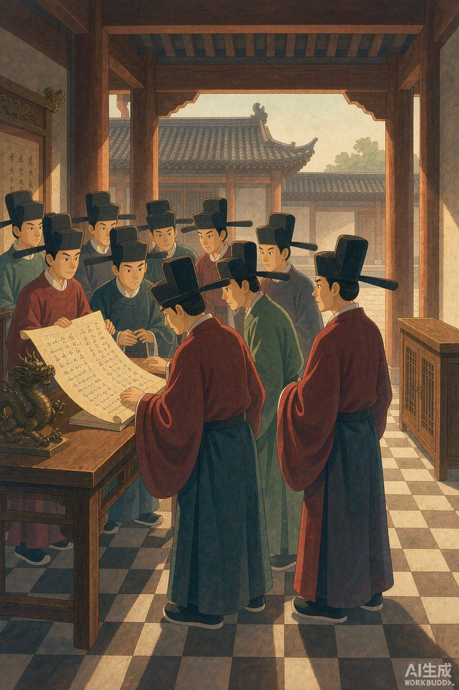
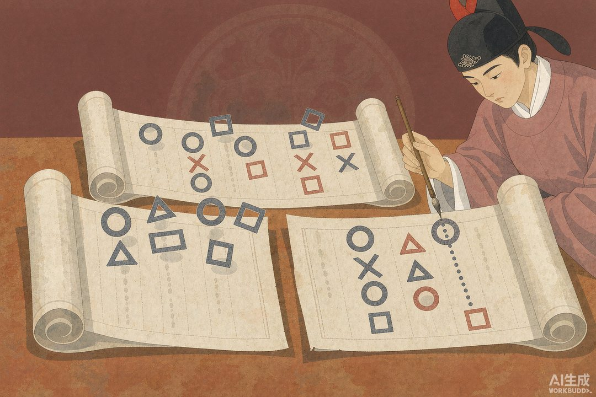

|
信息传播那些事儿 · 卷二 · 第 33 篇 |
|
官员怎么读邸报 —— 一份邸报，半部官场人脉图 |

▲ 同僚们凑在一份邸报前传阅议论（AI 生成示意图）
|
上一段我们讲了塘报怎么把军情送进京城。可东西送到了，得有人看、有人读、有人从中琢磨出门道。明清两朝，读邸报的不是老百姓，是一群戴乌纱的官员。对他们来说，邸报不是"新闻"，是每天的"官场晴雨表"——谁升了、谁贬了、哪道新政下来了，全在里面。今天我们就钻进衙门，看官员怎么读这份"古代的人民日报"。 |
邸报从六科（清代还经军机处发抄）出来，第一站是在京各衙门，再由驻京提塘官抄录刷印，发回本省、下发各级官吏，乃至缙绅。这条链路决定了：邸报的第一读者，是官，不是民。
一 | 邸报先到谁手里 |
明清的邸报，由通政司、六科编辑发布，提塘报房抄传发送全国各地，下达至各级官吏乃至缙绅人士。它是时人了解国家大事的主要来源，在明人文集里随处可见。但注意：它是"内部读物"。明末顾炎武在苏州看到一份邸报，发现和京师的"不全抄"，内容差得很远——这说明外省官员拿到的，本就是"筛选版"。
所以邸报的读者结构很清晰：顶端是京官，看得最全；往下是外任官员，看到的是提塘替本省挑过的摘要；再往下是缙绅，能蹭一点边；平民，原则上不在服务对象内。

▲ "除目"：官吏任免名单，是官员最盯的一栏（AI 生成示意图）
二 | 一份报，全府轮着看 |
邸报是手抄或印刷品，复制不易，又受经费限制。史料里有个生动的细节：某府原来订两本邸报，后来为省钱减成一本，府里正佐官员们只好"轮流传看"，谁出差了再另行抄送。想象一下——一帮同僚挤在一张案前，传阅一份"内部简报"，边看边议论。这大概是中国最早的"办公室读报角"。
一份报养一府人，说明邸报在当时既金贵又紧俏。它不是随便发的传单，而是按编制、按经费配给的"政治待遇"。
三 | 读什么：除目、上谕、宫门抄 |
邸报内容大致分几块：宫门抄（皇帝起居、大臣陛见、礼宾祭祀）、上谕（皇帝明令）、臣僚章奏（只刊少量原文，多数只列目录）。其中官员最盯的，是"除目"——"除"是拜官，"目"是条目，合起来就是官吏任命的名单目录。今天谁升了、谁贬了、谁外放了，一翻除目就知道。
对官员来说，这份名单就是自己的"职场 KPI 预告"。名字往上挪，全家欢喜；名字消失或"左迁"，就得提前找退路。邸报的"可读性"，一半在任免，一半在风向。
▲ 提塘把京报发往各省：京官看全量，地方官看摘要（AI 生成示意图）
四 | 从字缝里读门道 |
只读名单不够，老练的官会从字缝里读信号：某人的奏折被"留中"（不批不发还），往往是失宠；某道新政突然下发，可能预示风向变了；谁的名字从邸报消失，多半出事了。邸报是官方口径，但官员把它当"密码本"——表面看任免，背后读派系、读圣意、读局势。
这和今天职场人刷内部通知、琢磨人事变动，思路一模一样。信息还是那点信息，会不会读，差出的是一整个江湖。
五 | 外省的报，为什么薄一半 |
前面说到顾炎武发现"吴中报比之京师，仅得十五"——意思是苏州能看到的邸报，大约只有京师的一半，而且不是全抄。原因很实在：驻京提塘抄报时，天然更关心本省相关的信息，与本省无关的就略过；加上传递损耗、经费、保密，外省拿到的本就是"阉割版"。
所以同样是读邸报，京官看"全量"，地方官看"摘要"。信息差从几百年前就存在了。直到晚清民间报房（京报房）兴起、京报慢慢有了大众媒体色彩，这堵墙才慢慢松动——而雍正之前，平民连订阅邸报都被禁，读报是官员专属的政治待遇。
|
数字锚点 · 一份邸报的"发行账" | |||||||
|
|
🔔 下篇预告 · 第 34 篇《童谣与民歌》—— 官员们在邸报里读朝堂，可老百姓读不到邸报。那普通人靠什么了解天下、又靠什么发表意见？答案是街头巷尾的童谣和民歌。下一篇说。 |
史料转引自《明史·职官志》、《明会典》六科发抄制度、顾炎武读报记述，及清代提塘/京报房与邸报发行相关研究公开综述；配图为 AI 生成示意图。